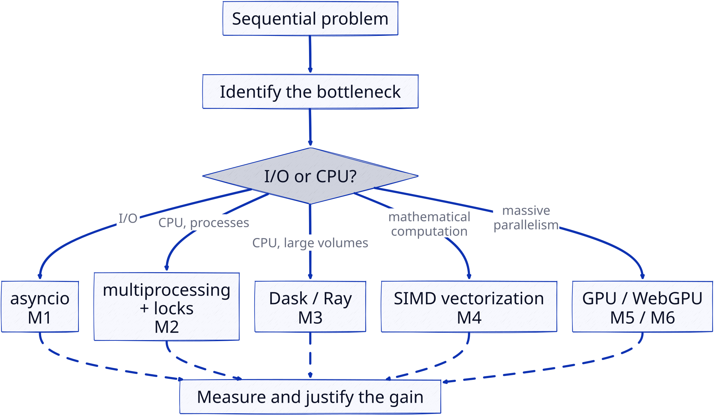

15 Module summary
What to remember, and where to start
This page recaps the thread of the module and serves as a navigation map for the autonomous work. It complements the modules: it helps you situate each concept.
15.1 The thread: parallelism is not free
The single theme of the course fits in one sentence: parallelizing means decomposing to speed up, but every decomposition has a cost (scheduling, communication, memory, synchronization). The speed curve is never linear in the number of workers.

15.2 Map of the 6 modules
| Module | Question it addresses | Main tools | Bottleneck targeted |
|---|---|---|---|
| M0 — Intro | What does parallelizing mean? | Amdahl/Gustafson laws, Flynn’s taxonomy | vocabulary |
| M1 — Asynchronous | How not to wait? | asyncio, event loop, gather |
I/O |
| M2 — IPC & locks | How to coordinate processes? | multiprocessing, Queue, Lock |
shared CPU |
| M3 — Distributed | How to split a large computation? | dask, ray, delayed |
large volumes |
| M4 — SIMD | How to use one instruction for several data? | numpy, numba | vector computation |
| M5 — GPU | How to exploit many simple cores? | CuPy, numba-CUDA | massive parallelism |
| M6 — WebGPU | How to compute in the browser? | WebGPU, WGSL | GPU access |
15.3 Cross-cutting watch points
- Python’s GIL only blocks threads on CPU-bound work; asyncio is for I/O, multiprocessing is for CPU-bound work.
- Always measure before and after: only timing (with the cost of transfers for the GPU) justifies an architecture choice.
- A lock serializes a critical section: it prevents races but introduces waiting and a risk of deadlock.
- Shared state is the enemy of parallelism: prefer pure tasks (no mutation, no side effects) as recommended by Dask best practices.
15.4 Indicative deadlines
| Deliverable | Due |
|---|---|
| Track choice + survey | S1 (26/08) |
| Learning plan (+ prompt for A) | before S5, validated in S5 (22/09) |
| Logbook | ongoing, checks S6–S8, synthesis before S9 |
| Comparative report (reflexive + observational) | before S9 (indicative 20/10) |
| Final project (report + defense) | defense S11 (18/11), report before |
| Final metacognitive report | S12 (19/11) |
15.5 Where to start
- Read the teaching design (
teaching-design.qmd): it is the framework, everything follows from it. - Choose your hardware (see
prerequisites.qmdto install the tooling, online or local LLM depending on your machine). - Write your learning plan (template in
learning-plan.qmd): it sets the order and the success criteria; it is your roadmap. - Module 0 first, then M1 → M2 → M3, and depending on your objectives M4 → M5 → M6.